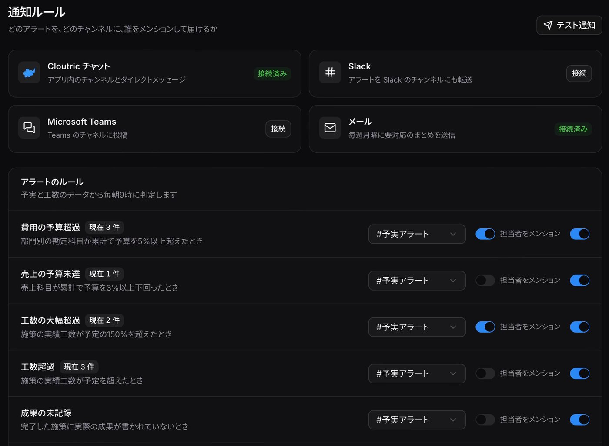

| 導入する企業が気にすること | Cloutric での設計 |
|---|---|
| 数字を社外に出したくない | 自社のサーバーで Docker で動く。データは自社の1つのフォルダにだけあり、外部への通信はない。提供する自分も、どの会社の数字にも触れない。 |
| 導入と更新の手間 | インストールも更新も1行。更新時のデータベース移行に失敗したら自動で元に戻し、更新前のバックアップを残す。 |
| 料金と人数 | ¥9,800 の一回払い、全社で人数無制限、1年分の更新つき。その1年に出た版は、期限後もずっと使える。 |
| やめるとき・ほかのツールへ移るとき | 契約の状態に関係なく、閲覧と書き出しは止めない。書き出しは1つの ZIP に、全データの JSON、Excel で開ける CSV、ほかの予実・BI ツールが読める縦持ちの CSV、データベース本体をまとめる。取り込みは Excel から書き出した CSV（Shift_JIS）をそのまま読める。 |
| 試すまでのハードル | cloutric.com のデモをそのまま触れる。インストール後30日は鍵なしで使える。 |
ID / 施策名 / 部門 / 担当 / ステータス / 工数（実績・予定）/ 原価差異 / 期限
新規作成
部門 / 勘定科目 / 差異
なし。見るだけ。届け先は通知ルールで決める
アラートの種類 / 届け先チャンネル / 担当者メンション / 現在の該当数
届け先を選ぶ / Slack・Teams・メールにつなぐ
名前 / 公開・非公開
メッセージを送る / @メンション
名前 / 役職
DMを送る
関係: 部門 1:n 施策（親子）/ メンバー 1:n 施策（担当として参照）/ 通知ルール → チャンネル・メンバー（参照）/ アラート → 部門・勘定科目（参照）。上段はプロパティ、青字はアクション。閲覧は操作に数えない。

フォームを一つ埋めるたびに新しいデータが一包みでき、機械が埋めたあとに自分で直した結果は、次の記憶に入る。
性別や学歴のように変わらない事実。書き換えずに写すだけ。
自己PRのように、相手に合わせて毎回書くもの。硬い層とは混ぜない。
分けた理由混ぜると、事実のほうが言い回しに引っぱられて、少しずつずれていく。
性別や国籍は、聞かれたときだけ出す。
| 欄 | 会社ごとの違い |
|---|---|
| 電話番号 | 1つの欄でハイフンの有無を指定する会社と、3つの欄に分ける会社がある。3つの欄は組として読み取り、前・中・後に分けて入れる。 |
| 住所・氏名 | 郵便番号の上3桁と下4桁、都道府県から番地までの分け方、全角の指定、氏名のカナ・ひらがな・ローマ字。同じ値を何通りもの形で持っておく必要がある。 |
| 年月 | 「2023年4月」「2023年04月」「2023/04」と、欄ごとに書式が違う。 |
何を作るか / どういう体験にするか / 仕様書・タスク指示書
規約を読んでから実装・記録
出力を読んで直す・採否を決める
自分と友人が使い、止まったところを設計に戻す